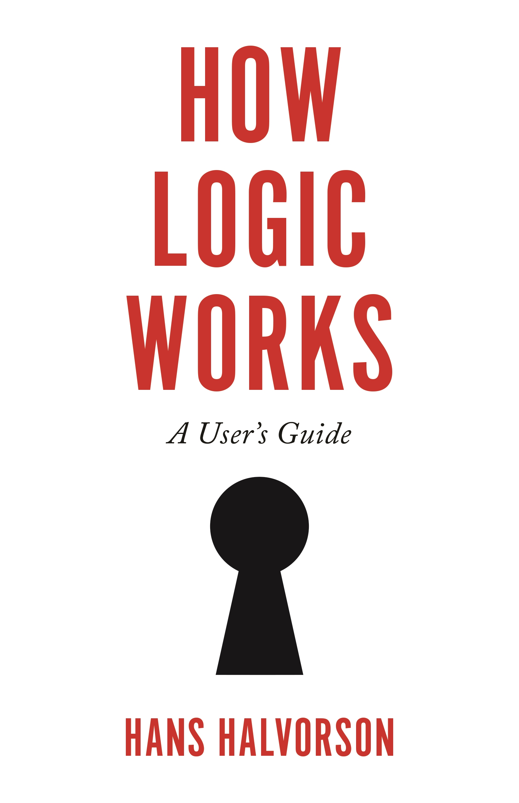

In the solutions that follow, we give specific examples of proofs. But there is never just one correct proof. The best way to check the correctness of (formal) proofs is not by comparing them to someone else’s proofs, but by running them through a proof checker. It is fairly easy to write a proof checker for these kinds of proofs, but more difficult to make decisions about how to transform proofs written by humans into data structures that can be processed by a machine.
Exercise 2.1
Prove that q∧p follows from p∧q. That is, write p∧q on line (1), then use the rules (∧ introduction and elimination) repeatedly until you obtain q∧p.
(1) p∧q
(2) p 1 ∧E
(3) q 1 ∧E
(4) q∧p 3,2 ∧IProve that p∧(q∧r) follows from (p∧q)∧r.
(1) (p∧q)∧r
(2) p∧q 1 ∧E
(3) p 2 ∧E
(4) q 2 ∧E
(5) r 1 ∧E
(6) q∧r 4,5 ∧I
(7) p∧(q∧r) 3,6 ∧IExercise 2.2 (∧E, ∧I, ∨I)
p∧q ⊢ q∨r
(1) p∧q
(2) q 1 ∧E
(3) q∨r 2 ∨Ip∧q ⊢ (p∨r)∧(q∨r)
(1) p∧q
(2) p 1 ∧E
(3) p∨r 2 ∨I
(4) q 1 ∧E
(5) q∨r 4 ∨I
(6) (p∨r)∧(q∨r) 3,5 ∧Ip ⊢ q∨(p∨q)
(1) p
(2) p∨q 1 ∨I
(3) q∨(p∨q) 2 ∨Ip ⊢ (p∨r)∧(p∨q)
(1) p
(2) p∨r 1 ∨I
(3) p∨q 1 ∨I
(4) (p∨r)∧(p∨q) 2,3 ∧IExercise 2.3 (∧E, ∧I, ∨I, MP)
p→(q→r),p→q,p ⊢ r
(1) p→(q→r)
(2) p→q
(3) p
(4) q 2,3 MP
(5) q→r 1,3 MP
(6) r 5,4 MP(a∨b)→t,z→a,t→w,z ⊢ w
(1) (a∨b)→t
(2) z→a
(3) t→w
(4) z
(5) a 2,4 MP
(6) a∨b 5 ∨I
(7) t 1,6 MP
(8) w 3,7 MP(a→b)∧(c→a),(c∧(w→z))∧w ⊢ (b∨d)∧(z∨e)
(1) (a→b)∧(c→a)
(2) (c∧(w→z))∧w
(3) w 2 ∧E
(4) c∧(w→z) 2 ∧E
(5) w→z 4 ∧E
(6) c 4 ∧E
(7) c→a 1 ∧E
(8) a→b 1 ∧E
(9) a 7,6 MP
(10) b 8,9 MP
(11) b∨d 10 ∨I
(12) z 5,3 MP
(13) z∨e 12 ∨I
(14) (b∨d)∧(z∨e) 13 ∧Ip→(p→q),p ⊢ q
(1) p→(p→q)
(2) p
(3) p→q 1,2 MP
(4) q 3,2 MPp∧(p→q) ⊢ p∧q
(1) p∧(p→q)
(2) p 1 ∧E
(3) p→q 1 ∧E
(4) q 3,2 MP
(5) p∧q 2,4 ∧IExercise 2.4 Prove that q→(p→r),¬r∧q ⊢ ¬p
(1) q→(p→r)
(2) ¬r∧q
(3) q 2 ∧E
(4) ¬r 2 ∧E
(5) p→r 1,3 MP
(6) ¬p 5,4 MT